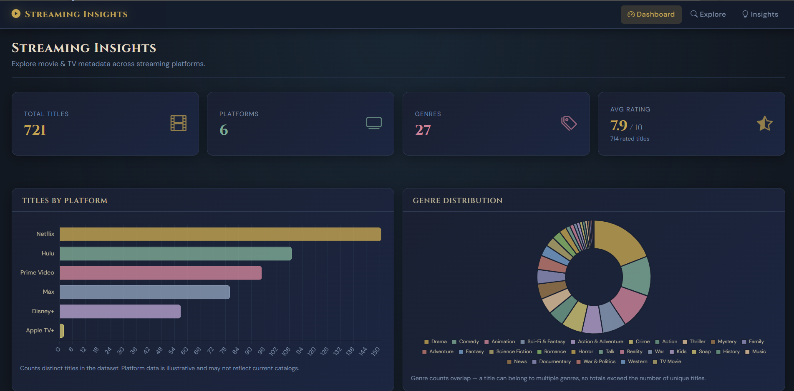

Personal Project
Streaming Insights Dashboard

Overview
Streaming Insights Dashboard is a full-stack web application built with Python and Django that explores movie and television data across streaming platforms. By integrating the TMDB API, the application retrieves real entertainment data and presents it through a dashboard that makes it easier to explore titles, compare ratings, and discover trends across streaming platforms.
How it works
The application connects to the TMDB API to get hundreds of movie and television title's information, genres, ratings, poster images, and streaming platform availability. Django handles the application's backend logic and processes the retrieved data for display through a web-based interface. The dashboard organizes this information into a centralized experience where users can browse and analyze entertainment content.
Explore Feature
What I Learned
Through this project, I gained experience developing a full-stack web application with Django and integrating an external REST API. I learned how to work with structured JSON responses, organize data, and connect backend logic to a user-facing interface. I also explored AI-assisted development tools to speed up implementation, troubleshoot issues, and adjust the dashboard's design. This project strengthened my understanding building data-driven applications while still exploring my interest in how software applies to themed entertainment.